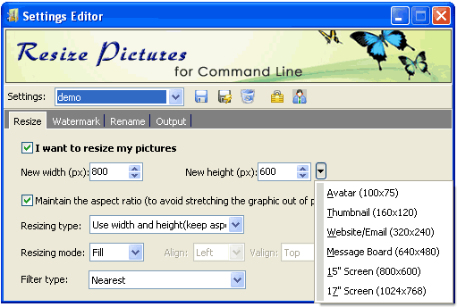
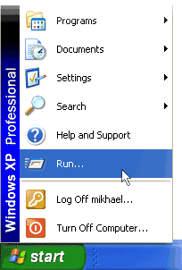
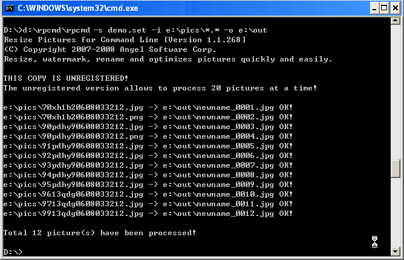

Resize Pictures for Command LineIntroductionResize Pictures for Command Line is a comprehensive and powerful image processing utility which allows the batch-processing of large numbers of graphics files at the same time. Its reliability and stability also make it the perfect graphics kernel for integration into your own software applications or for Web-server integration. Do you often find yourself overwhelmed with email images, electronic faxes and document scans? Just use Resize Pictures for Command Line to settle on a single uniform image size and file format, and discover that you can more easily: In fact, by simply writing a command console "batch file", you could set up a complex operation one time and then call the batch file every time you need to repeat the operation on a new batch of images. Resize Pictures for Command Line can be easily launched from any Visual C++, Visual Basic or Delphi application, or even from any ASP script. Create settings file in Settings EditorCreate settings file of Resize Pictures for Command Line with Settings Editor very easily. It has a simple GUI for user.  Resize pictures: Select Resize tab in the toolbar. Then set a new Width and Height and choose on of the following option:
Watermark pictures: Select Watermark tab in the toolbar. You can use Resize Pictures for Command Line as an authoring tool by adding watermarks to your pictures. Watermark is a text or image that can be placed in the pictures. This can be information, containing copyright information, your website address or any other. Also, you can change font settings, angle, position and opacity. Output settings : Select Output tab in the toolbar. Then set save format and optimize value, and save folder etc. To specify an output file type - select an appropriate extension in the Save in format DropList. You also can set 'Don't change the file creation date-time' and 'Remove Exif information from pictures'.
launch the programThe command line parameters are very short and simple. There are: Usage: rpcmd -s settingsfile -i sourcepath -o outputpath -i Set pictures source folder and file format. E.g. -i D:\pics\*.jpg or -i D:\pics\*.*. -o Save processed files to a specific output folder. E.g. -o D:\converted.
Below you can see example of launching Resize Pictures for Command Line. 1. Install the program on your computer. 2. Press 'Start" button, then select 'Run...' and press it. 3. Enter command line, like: e:\rpcmd\rpcmd -s demo.set -i e:\pics\*.* -o e:\out
Please note: e:\rpcmd\rpcmd is a default installation directory name. If you didn't install the program on that, please change it. Please note: now the program supports filename mask (filter). So you can type a filename mask such as: '1*.jpg' or '111???.jp*' etc. 4. Press 'OK' button. 5. A DOS mode window will open and the processing will start. 6. Processed files will be stored in 'E:\out' folder. If you do processing often you may found it more convenient to make a processing script as a BATCH-file.launch the program from BATCH-fileLaunching the program from BATCH file may be very useful when you need to make similar processing with variable parameters. Below we offer you two variants of using BATCH file: First variant:
Second variant:
In this example variable %1 will take on value 'e:\pics\*.*' and variable %2 - 'e:\out'. launch the program from PERL script under Windows serverBelow you can see example of launching Resize Pictures for Command Line from PERL script under Windows server:Example:#!/usr/bin/perl print "Content-Type: text/html\n\n"; exec $ExecString; launch the program from ASP
If you don't know, what version of the Windows Script is already installed on your server click here. Below you will find examples of launching Resize Pictures for Command Line from ASP using JavaScript and Visual Basic syntax. Example with JavaScript syntax:<%@ LANGUAGE = "JAVASCRIPT" %> Example with Visual Basic syntax:<% ' The path to Resize Pictures for Command Line with its parameters ' Creating a WSH object ' Launching Resize Pictures for Command Line ' The program response stream ' If the current symbol is a line feed -> the "<BR>" tag
should be added for HTML line feed ' Writing out the program response
If an error page ("HTTP 500.100 - Internal Server Error - ASP error") will appears and a text "Object doesn't support this property or method" will be in the "Error type" item then Windows Script on your server has a version older than 5.6 and you need to install Windows Script 5.6 from http://msdn.microsoft.com/scripting/default.asp.
RegistrationResize Pictures for Command Line is a try-and-buy program. The unregistered copy allow you to evaluate it and allows you to process 30 pictures at a time. Registration means two steps: Step 1. Buy Now If you decided to buy Resize Pictures for Command Line, please click Register Now button on the toolbar of Settings Editor. Open the registration dialog box. Then click 'Buy Now' button and follow instructions on Internet pages. Step 2. Register Click Register Now button on the toolbar of Settings Editor again. To open registration dialog box. After enter your name, your email address and license key, you can press Enter Key button and complete the registration. After registered, you can enjoy the exclusive service:
|